Vomit
The body ejecting what it can no longer hold — food, bile, unease. Vomiting can follow spoiled food or a mind under strain: nausea, stress, the body's own warning system before the release.
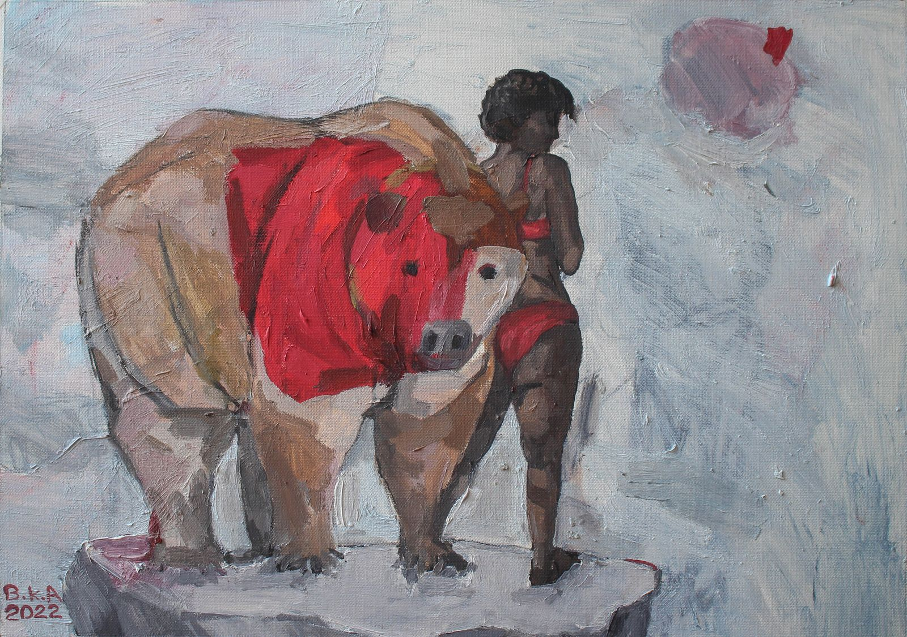
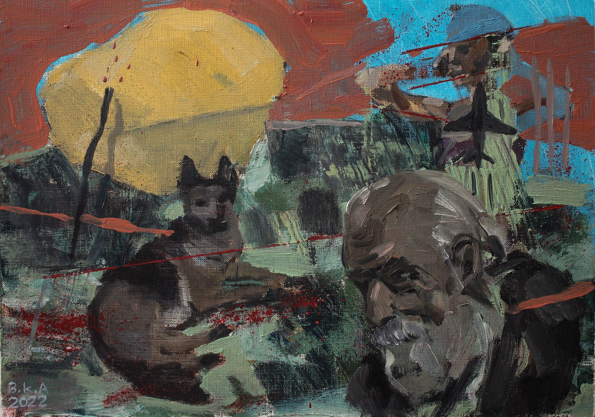
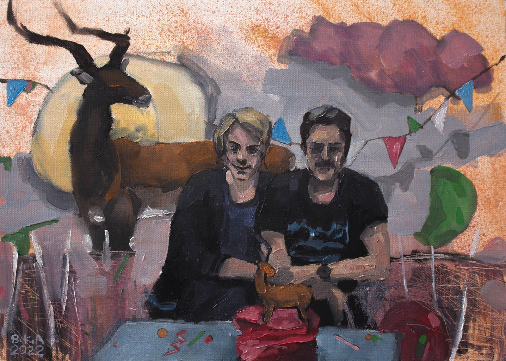
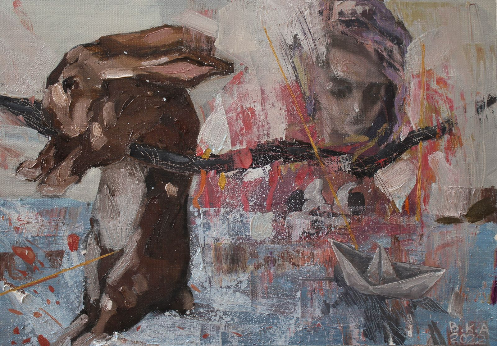
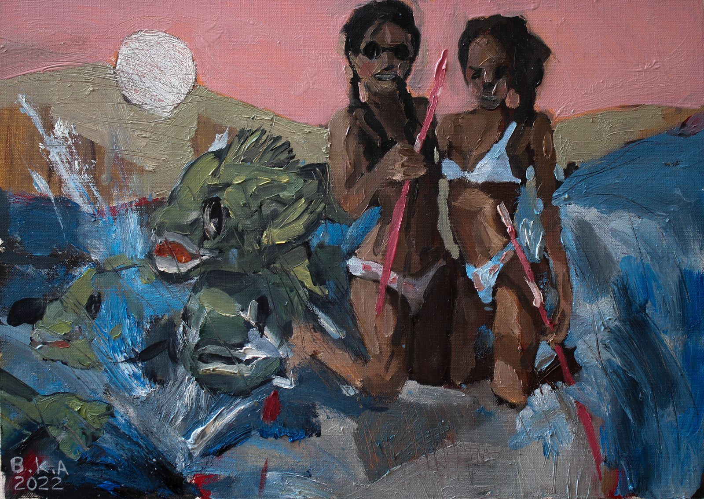
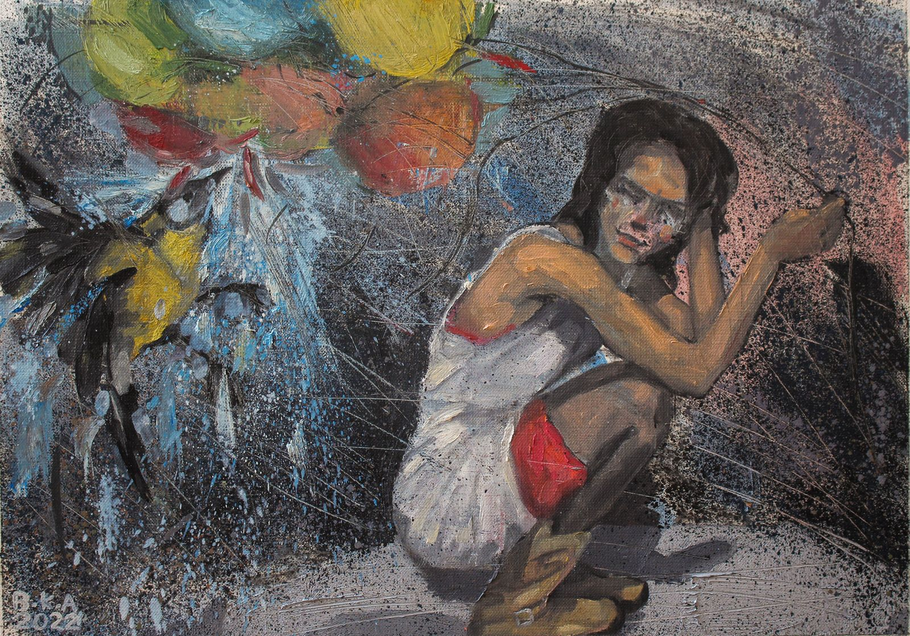
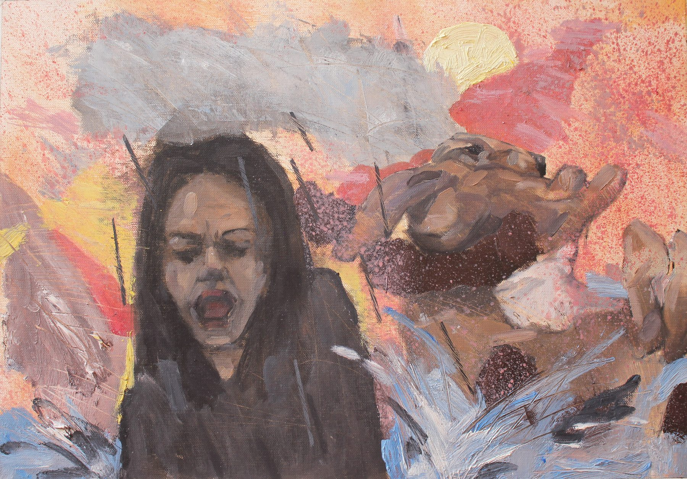
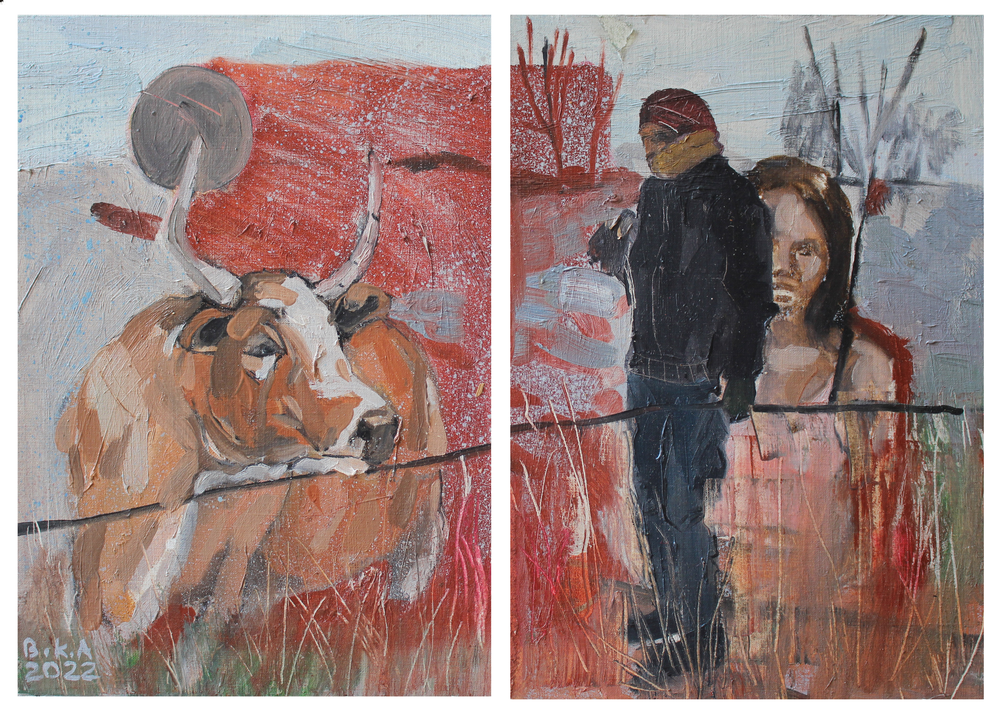
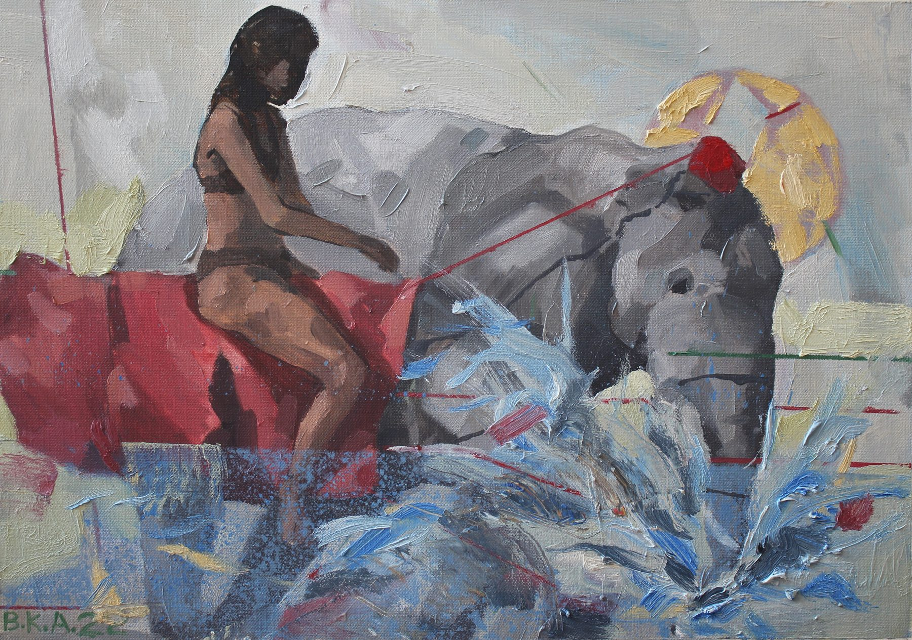
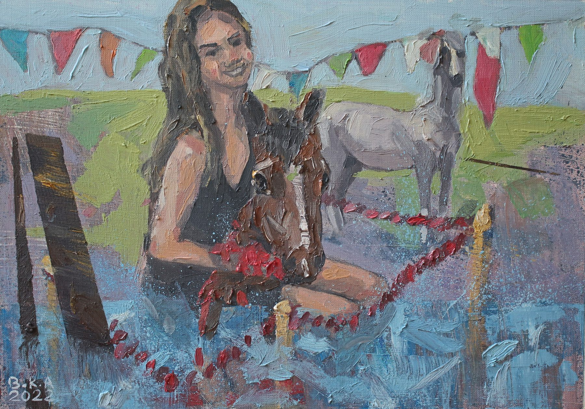
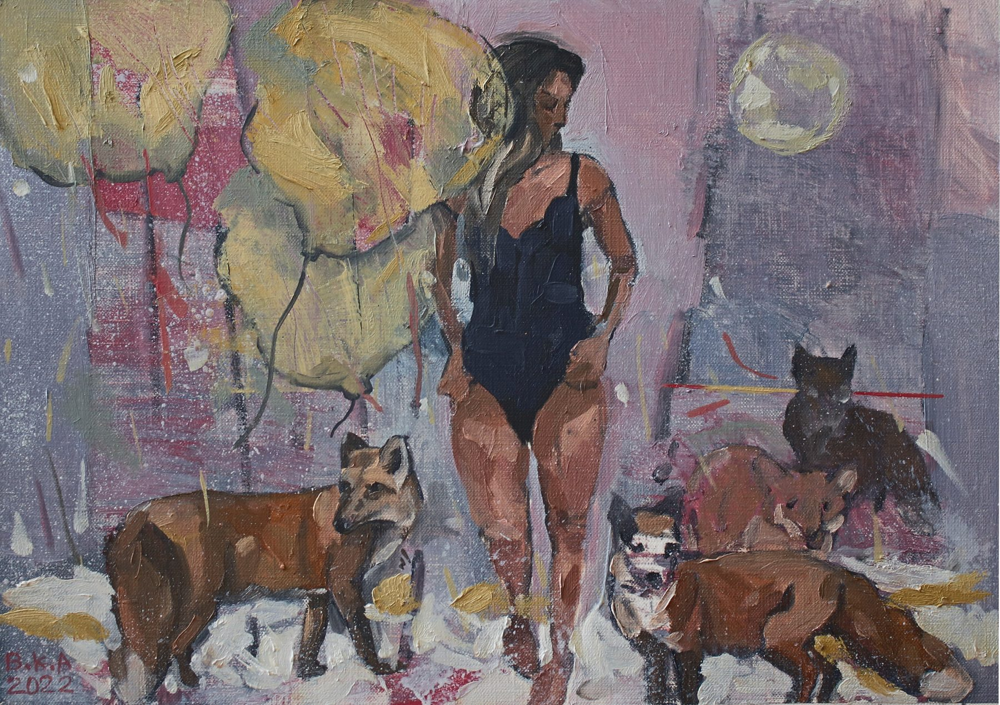
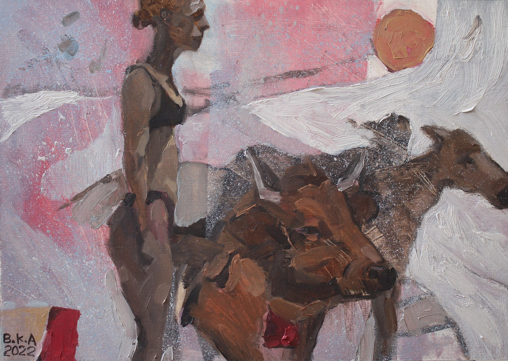
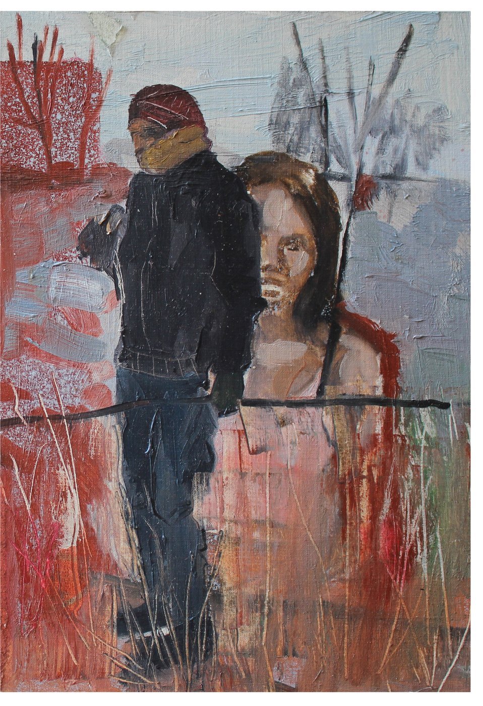